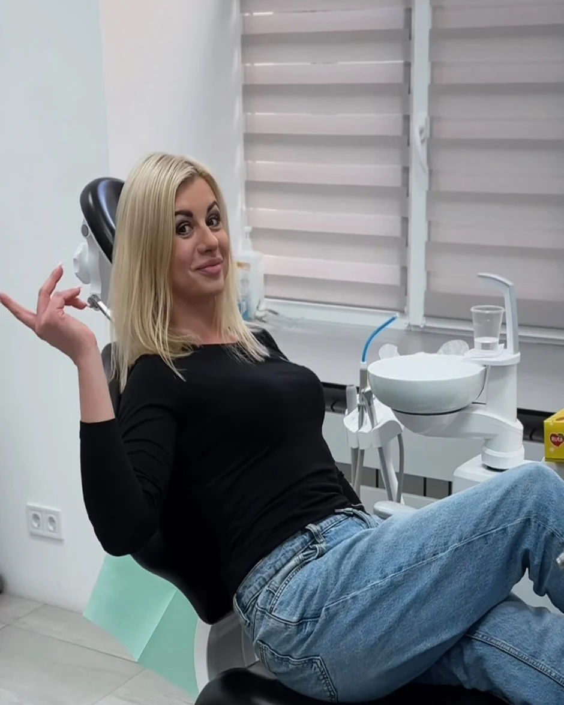
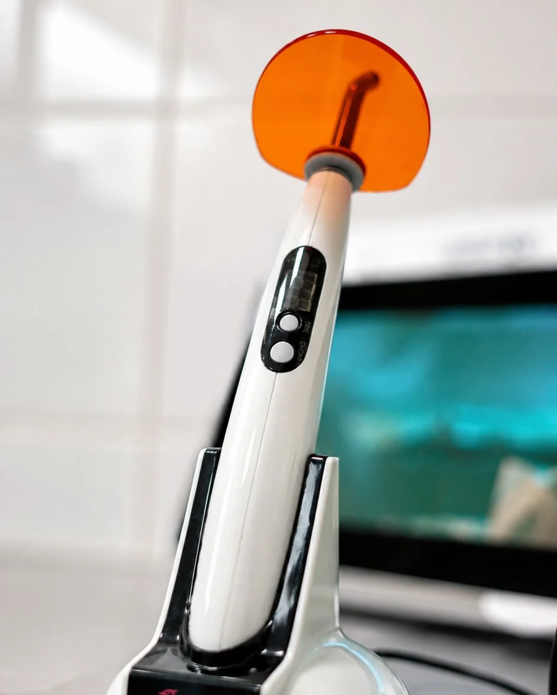
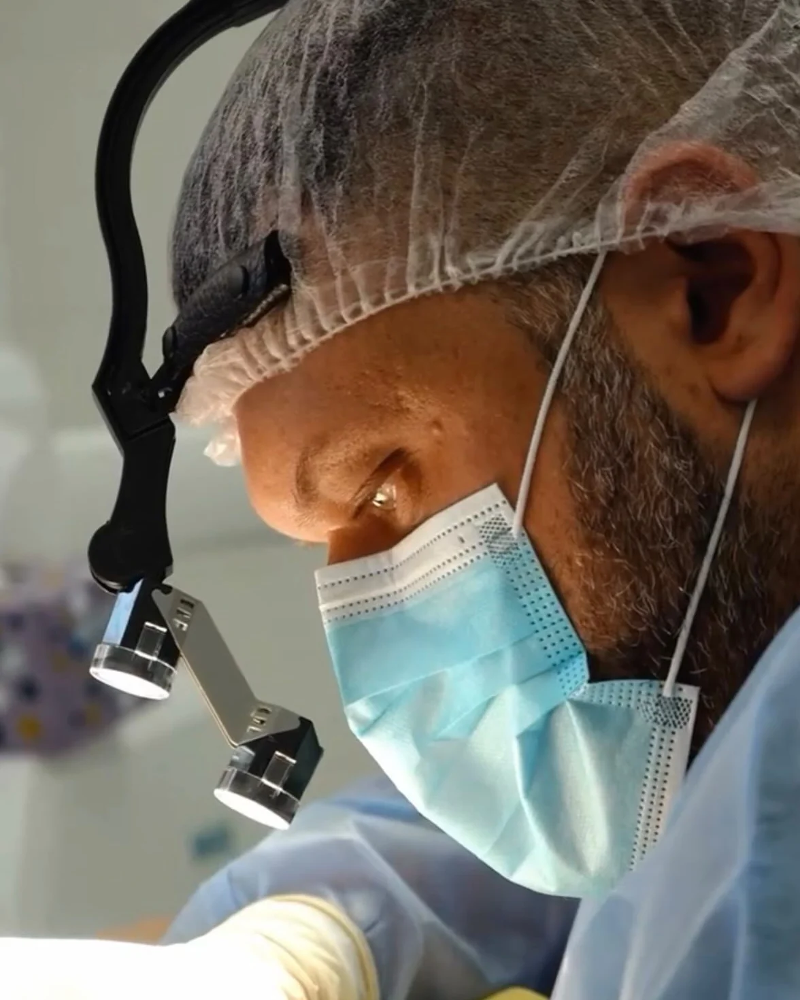
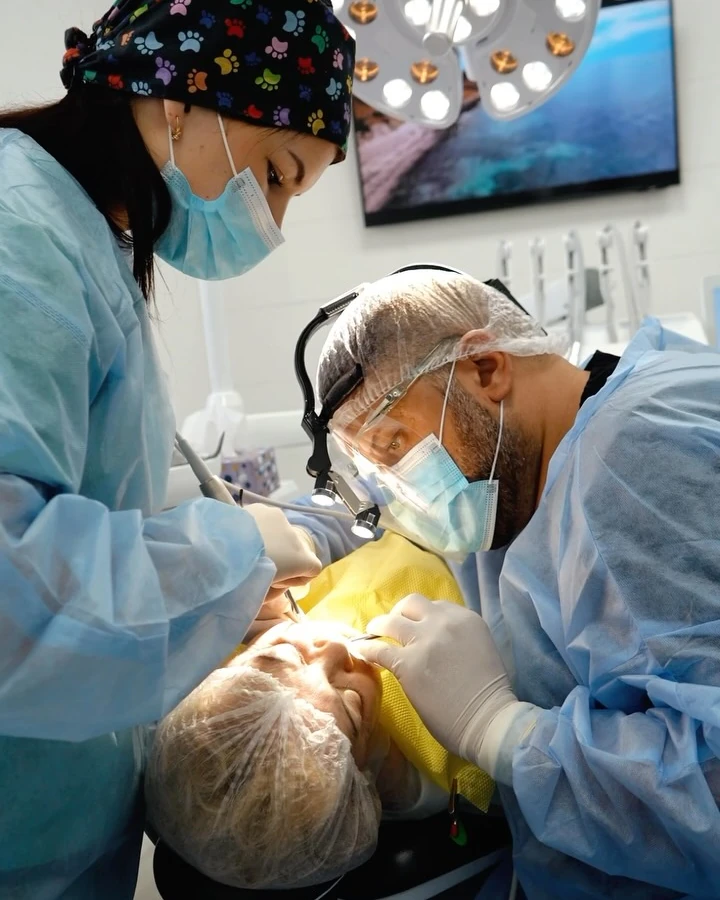
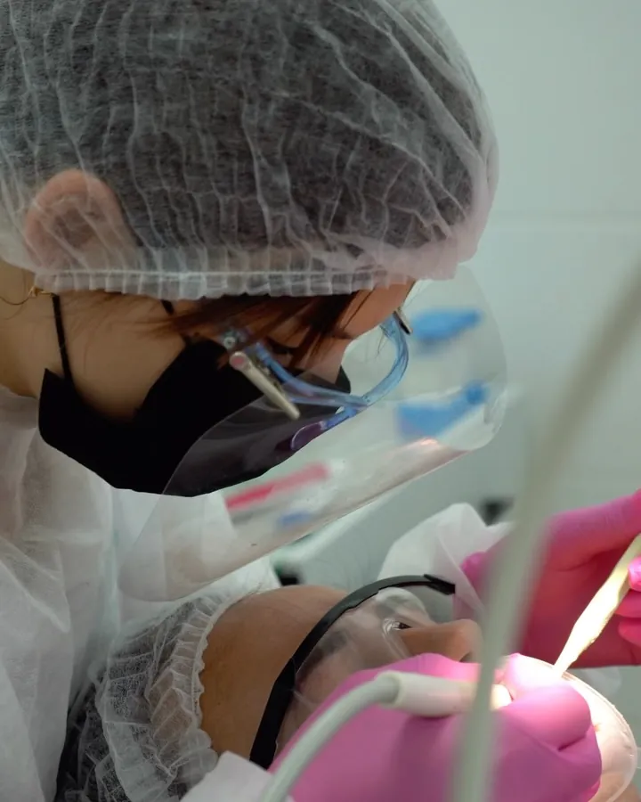
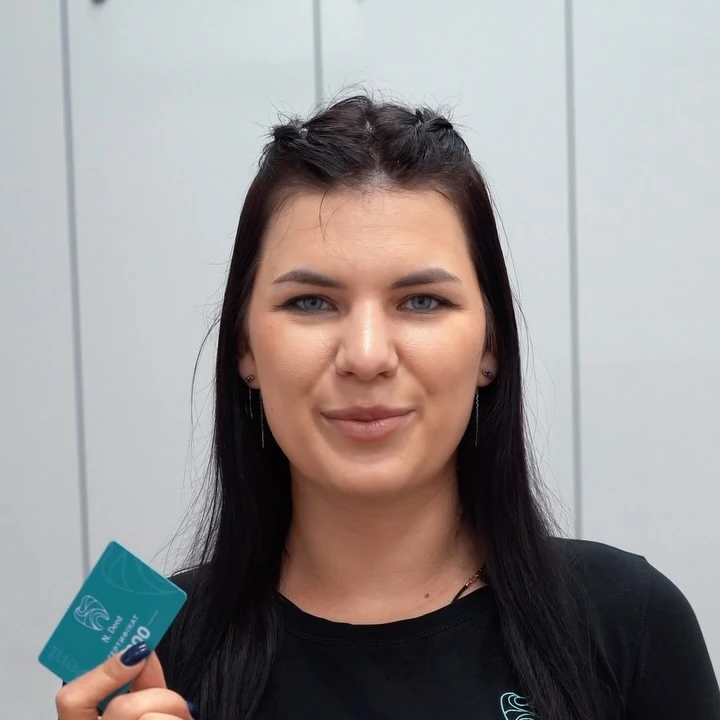
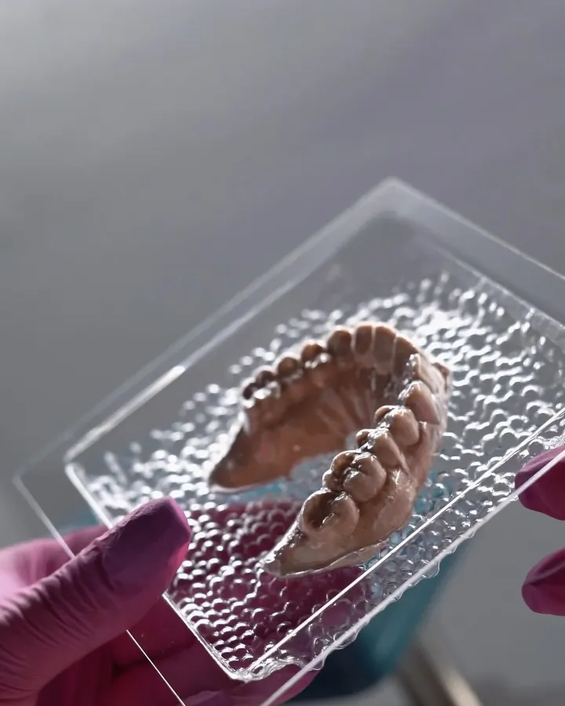

Іван Михайлович Федор
Хірургія та імплантаціяВидалення зубів, зокрема зубів мудрості, і імплантація. Пацієнти відзначають, що він помічає більше, ніж один зуб.
N.Dent - затишна сучасна стоматологія для всієї родини. Лікуємо, видаляємо, імплантуємо і протезуємо уважно, без болю і без черг на тижні вперед.

Ми створювали N.Dent, щоб професіоналізм лікарів, приємні ціни і затишна атмосфера поєдналися в одному місці. Тут лікують не лише зуби, а й страхи.
Більше про клініку

Карієс, пульпіт, реставрація. Пояснюємо план до початку лікування.

Видалення зубів, зокрема мудрості і коренів, що залишилися.

Імплантати MegaGen і план, складений саме під вас.

Цирконієві коронки, зокрема на гвинтовій фіксації.
Ультразвук, Air Flow і полірування.

Зуби можуть бути білішими, ніж ви думаєте.

Без страху та сліз, а після прийому - подарунки.

Власне виробництво: від відбитка до готової капи.

Капи робимо самі, тож контролюємо кожен етап і точність посадки.
Фіксуємо точну форму вашого зубного ряду.
За відбитками створюємо точну модель зубів.
Виготовляємо індивідуальну капу, яка повторює форму саме ваших зубів.
Видалення зубів, зокрема зубів мудрості, і імплантація. Пацієнти відзначають, що він помічає більше, ніж один зуб.
Лікування зубів. Пацієнти дякують за терпіння, турботу і приємну ціну.
Лікує маленьких пацієнтів так, що діти охоче приходять на наступний зубчик.
Благодарим стоматологию N.Dent и врача Федора Ивана Михайловича за профессионализм, внимательное отношение и качественное лечение! Были всей семьей, каждый с разными проблемами и страхами, но, как всегда все на высшем уровне, к каждому индивидуальный подход. Визит прошел комфортно и безболезненно. Очень довольны результатом и от всего сердца рекомендую!
Хочу искренне поблагодарить стоматологию N.Dent за отличное отношение и профессиональную работу! Обращались для лечения зуба у ребенка - все прошло просто замечательно. Врачи внимательны и бережны, все объясняли, работали очень осторожно. Отдельная благодарность помощнице врача - она смогла успокоить ребенка, создала дружелюбную атмосферу и поддерживала на протяжении всего приема. Персонал приветливый, все улыбаются, сразу чувствуется забота о пациентах. Рекомендуем N.Dent всем - особенно тем, кто ищет хорошего стоматолога для детей!
Федор Иван Михайлович, благодарю за отличный приём! От зуба оставался один корень. Очень переживал, что удаление будет тяжелым. Всё прошло быстро, качественно и в уютной атмосфере. Всем рекомендую N.Dent!
Дочери 8 лет, лечила врач Багринцева Лиза Борисовна. Очень благодарны за подход и профессиональное лечение. Приятно удивлена подходом к ребенку. Записались на лечение следующего зубчика. Ребенку очень понравилось, потому что процедура прошла, как в сказке, да еще и подарили подарки. Спасибо! Желаю развития и мира!
Очень уютная, новая чистая стоматология. Коллектив приятен и внимателен ко всем мелочам. Врач профессионал своего дела! Я волновался больше чем требовалось) Все сделали быстро, не больно, а даже очень весело))) Спасибо Вам!!! Советую всем!!!
Здравствуйте, хочу поблагодарить врача Федор Иван Михайлович! Он мне вырывал зуб и отправил на КТ!!! По КТ он обратил внимание, что у меня проблемы с носом и дал рекомендации обратиться к Лору. Ваш врач на 100% был прав. Мне нужна теперь операция. Если бы не ваш доктор, неизвестно сколько я ещё жила бы и не знала об инородном теле в пазухах носа.
Клиника новая и чистая, владельцы молодцы! Очень приятный администратор, всегда предложит кофе и чай, встречает с улыбкой! Все на высоте, украинский сервис действительно удивляет
Хочу поделиться своими впечатлениями от стоматологии! Я обратилась к стоматологии, так как была ограничена во времени, и врач меня принял! Так не просто принял он вложил сколько любви в мои зубы и терпения Обслуживание, забота, лечении и ЦЕНА Виталий Николаевич Вам отдельная благодарность Рекомендую от чистого сердца
| Понеділок - субота | 9:00-19:00 |
| Неділя | вихідний |